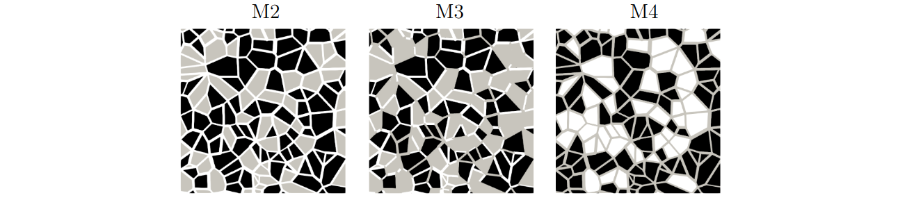
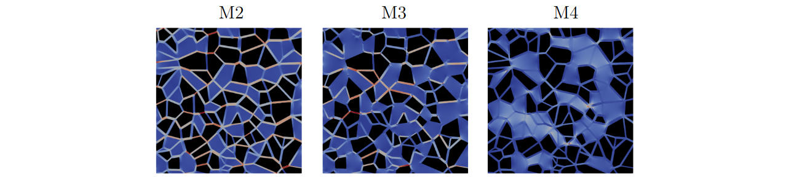

Gray Multiscale Micromodels¶
Extending the micromodel analysis performed in Multiscale Micromodels to the gray-scale, the micromodels M2, M3, and M4 were simulated and compared with the experimental results of Wolf et al. [10]. These micromodels have square dimensions of \(25 \times 25~\mathrm{mm}\) and approximate depths of \(34.8(0.9)~\mu\mathrm{m}\), \(33.6(0.5)~\mu\mathrm{m}\), and \(32.0(2.9)~\mu\mathrm{m}\) for models M2, M3, and M4, respectively. The M0 micromodel is used to represent microporosity of the gray region in the M2, M3, and M4 micromodels. Fig. 35 illustrates the micromodels’ structure. The M0 values of permeability and porosity are \(Da = k/H^{2} = 7.9 \times 10^{-8}\) and \(\phi = 46.1\%\), respectively. Each micromodel is characterized by its pore structure described by:
Micromodel 2 (M2): dual pore scale version of M1 with gray region represented by pore diameter ranging from 20 to \(50~\mu\mathrm{m}\), \(k = 10.06~\mathrm{Darcy}\), and \(\phi = 46.1\%\);
Micromodel 3 (M3): dual pore scale version of M1 with gray region represented by pore diameter ranging from 20 to \(50~\mu\mathrm{m}\), \(k = 10.23~\mathrm{Darcy}\), and \(\phi = 46.1\%\);
Micromodel 4 (M4): dual pore scale version of M1 with gray region represented by pore diameter ranging from 20 to \(50~\mu\mathrm{m}\), \(k = 10.79~\mathrm{Darcy}\), and \(\phi = 46.1\%\).


Fig. 35 - Gray-scale micromodels based on the Voronoi tessellation: M2 - dual pore scale version with gray grains; M3 - dual pore scale version with gray grains and gray throats; M4 - dual pore scale version with voids and gray throats. The black, gray, and white colors represent the solid, porous continuous, and void regions, respectively.¶
Absolute Permeability - Numerical Setup¶
To simulate the micromodels depicted in Fig. 35, the geometries are discretized as described in Tab. 12. The first and last mesh points along the \(y\)- and \(x\)-axes are designated as solid, representing the walls of the micromodel. The fluid flows through the \(z\)-axis promoted by an external force.
Model |
Voxel size [\(\mu\mathrm{m}\)] |
Grid [\(x,y,z\)] |
\(\phi_{dig}\) [%] Full-Scale |
\(\phi_{dig}\) [%] Gray-Scale |
|---|---|---|---|---|
M2 |
5.00 |
\(5000 \times 5002 \times 9\) |
40.2 |
40.2 |
M3 |
4.86 |
\(5148 \times 5150 \times 9\) |
33.6 |
35.5 |
M4 |
4.57 |
\(5468 \times 5470 \times 9\) |
36.7 |
40.9 |
The observed difference between full-scale and gray-scale porosity in Tab. 12 for the M2 and M3 cases is an important aspect. The fact that the gray porosity is greater implies that there are gray points in the M2 and M3 cases which do not represent the REV porosity of the M0 micromodel. Consequently, we believe that the presence of micro-scale pore throats in the M2 and M3 cases results in porosity values that are smaller than the REV porosity.
The lbpm_greyscale_simulator routine configuration for the gray
micromodel simulations is provided in file.db, as demonstrated in the
code below, using the M2 model with a grid size of
\(5000 \times 5002 \times 9\) as an example. The domain settings
InletLayers = 0, 0, 5 and OutletLayers = 0, 0, 5 are used to connect
the inlet and outlet of the periodic domain.
Greyscale {
tau = 0.8
F = 0.0, 0.0, 1.0e-6
timestepMax = 80000
tolerance = 0.00001
ComponentLabels = 1, 2 // Gray Scale
PorosityList = 1.0, 0.461 // Porosity Scale
PermeabilityList = 1.0e17, 9.92844538 // Permeability Scale
collision = "MRT"
}
Domain {
Filename = "M2-Gray-Micro-5000x5002x9.raw"
ReadType = "8bit" // data type
N = 9, 5002, 5000 // size of original image
nproc = 1, 2, 2 // process grid
n = 9, 2501, 2500 // sub-domain size
offset = 0, 0, 0 // offset to read sub-domain
voxel_length = 5.0 // voxel length (in microns)
ReadValues = 0, 1, 2 // labels within the original image
WriteValues = 0, 1, 2 // associated labels to be used by LBPM
InletLayers = 0, 0, 5 // specify 10 layers along the z-inlet
OutletLayers = 0, 0, 5 // specify 10 layers along the z-inlet
BC = 0 // boundary condition type (0 for periodic)
}
Analysis {
analysis_interval = 4000 // logging interval for timelog.csv
subphase_analysis_interval = 80000 // loggging interval for subphase.csv
visualization_interval = 80000 // interval to write visualization files
N_threads = 1 // number of analysis threads (GPU version only)
restart_interval = 1000000 // interval to write restart file
restart_file = "Restart" // base name of restart file
}
Visualization {
write_silo = true // write SILO databases with assigned variables
save_8bit_raw = true // write labeled 8-bit binary files with phase assignments
save_phase_field = true // save phase field within SILO database
save_pressure = true // save pressure field within SILO database
save_velocity = true // save velocity field within SILO database
}
Results¶
The results obtained are presented in Fig. 36 and Tab. 13. Figure 36 illustrates the velocity magnitude field for each micromodel, while Tab. 13 compares the obtained values with the full-scale results from Tab. 11 and the experimental results of Wolf et al. [10].


Fig. 36 - Velocity magnitude field obtained for each gray micromodel.¶
Model |
Gray-Scale |
Full-Scale |
Wolf et al. [10] |
||
|---|---|---|---|---|---|
\(k_{gs}\) [Da] |
\(\left\|\frac{k_{gs}-k_{exp}}{k_{exp}}100\right\|\) [%] |
\(k_{fs}\) [Da] |
\(\left\|\frac{k_{fs}-k_{exp}}{k_{exp}}100\right\|\) [%] |
\(k_{exp}\) [Da] |
|
M2 |
9.84 |
25.67 |
15.42 |
16.46 |
13.24(0.44) |
M3 |
4.35 |
24.21 |
6.52 |
13.58 |
5.74(0.01) |
M4 |
4.39 |
23.12 |
3.75 |
34.32 |
5.71(1.25) |
In the comparative analysis of permeability values across different micromodels, distinct variations were observed when contrasting the results obtained from gray-scale, full-scale, and the experimental data reported by Wolf et al. [10]. For micromodel M2, the gray-scale approach yielded a permeability value of \(9.84~\mathrm{Da}\), which was lower than the \(15.42~\mathrm{Da}\) obtained by the full-scale model. However, the experimental result of Wolf et al. [10] reached an intermediate value, aligning more closely with the full-scale model. Similarly, for micromodel M3, the gray-scale permeability was smaller than that of the full-scale, and in percentage terms, it was more distant from the experimental result. Regarding micromodel M4, the gray-scale model calculated the permeability at \(4.39~\mathrm{Da}\), higher than the full-scale estimation of \(3.75~\mathrm{Da}\). In relation to the experimental results reported by Wolf et al. [10], the gray-scale model presented a better percentage proximity. However, the porosity discrepancy for the models M3 and M4 must be taken into account for relevant comparisons.